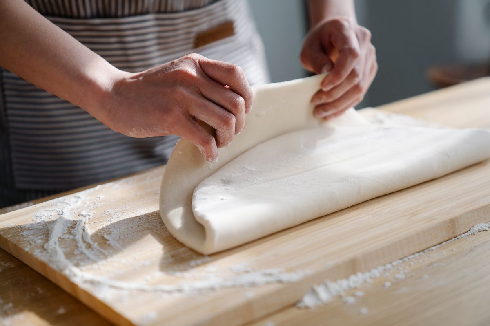
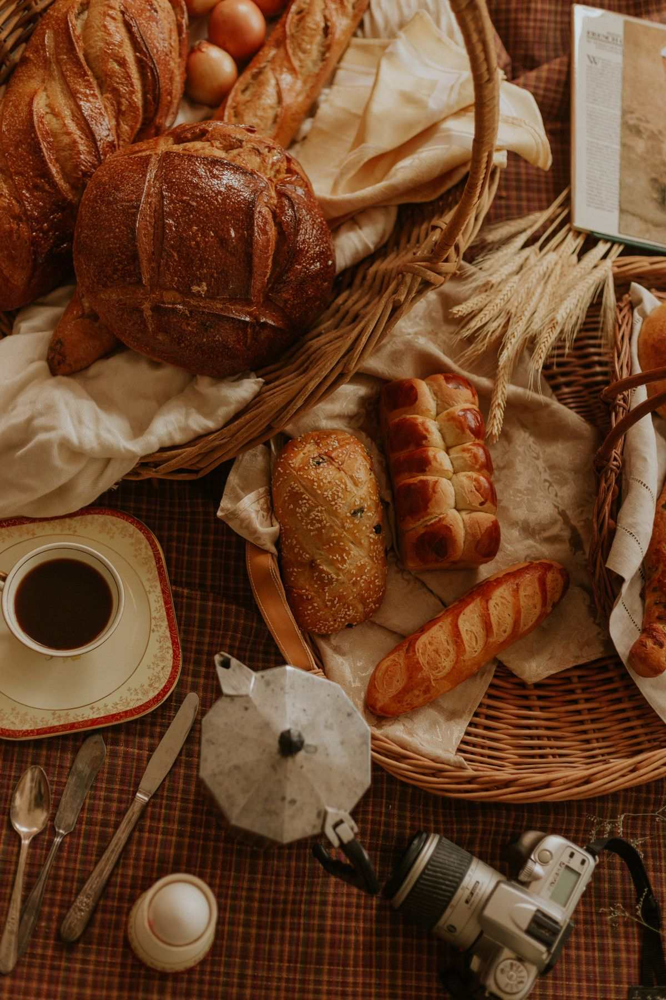
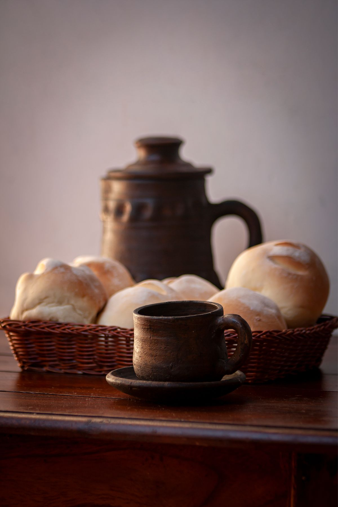

古民家の小さなお店
古い家の趣を感じながら、
パンを選ぶひととき。
NAGANO, UEDA — 小さなパン屋
上田・常磐城の路地の奥。
古民家にある、小さなパン屋です。
火〜土 10:00–16:00
売り切れ次第終了 ／ 日・月定休
01 / OPENING DAYS
その日焼いた分だけ、店頭へ。
パンを選びたい日は、どうぞお早めに。
【要確認：祝日の営業】
【要確認：臨時休業の告知方法】
当日の営業・売り切れ状況は、Instagramまたはお電話でご確認ください。
【要確認：Instagramでの当日の告知運用】
取り置きのご相談はお電話で。
【要確認：取り置きの可否と方法】
CALENDAR
通常の営業日をもとにした目安です
| 日 | 月 | 火 | 水 | 木 | 金 | 土 |
|---|
臨時休業・在庫状況は反映されません。
祝日の営業は店舗へご確認ください。

02 / ABOUT LITEN
朝ごはんに、午後のおやつに。
暮らしのなかに、パンのあるひとときを。
古民家をリノベーションした、こぢんまりとしたお店。口コミには、食べきりやすい小さめのパンをあれこれ選べる楽しさや、やさしい接客を喜ぶ声が見られます。
「liten」はスウェーデン語で「小さな」。
【要確認：店名の由来】
【要確認：お店の想い・開店のこと】
古い家の趣を感じながら、
パンを選ぶひととき。
小さめサイズがうれしい、という声。
朝食にも、おやつにも。
小麦や麹などの素材については、
お店への確認後にご紹介します。
03 / OUR BREAD
朝にひとつ。おやつにもうひとつ。
気分に合わせて、少しずつ。
おやつの時間に、甘いパンを。
【要確認：商品名・内容・価格】朝の食卓に、まあるいパンを。
【要確認：商品名・内容・価格】小腹のすく時間に、惣菜パンを。
【要確認：商品名・内容・価格】いつもの食事に、添えるパンを。
【要確認：商品名・内容・価格】ラインナップは日によって変わります【要確認】
このイラストは紹介カテゴリーのイメージです。実際の商品とは異なります。
A LITTLE DETOUR
上田城跡公園の散歩のついでに。
おうちで待つ人への、お土産に。
丸山邸の敷地内のお店と一緒に立ち寄る楽しみも。
【要確認：近隣店舗の紹介可否】

04 / ACCESS
住宅街の路地の奥にあるお店です。
迷ったときは、お電話ください。
上田城跡公園の近く、丸山邸の敷地内です。
道順に不安がある方は、地図をご確認のうえお越しください。
【要確認：目印・入口の案内と写真】
【要確認：駐車場の場所・台数】
【要確認：上田城跡公園から徒歩◯分】
地図が表示されない場合も、上のボタンから開けます。
05 / CONTACT
お問い合わせは、営業時間内にお願いいたします。
取り置きについても、まずはご相談ください。
火〜土 10:00〜16:00（売り切れ次第終了）
【要確認：取り置きの可否と方法】